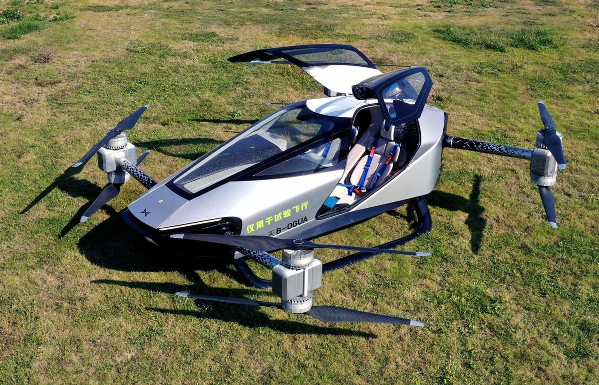
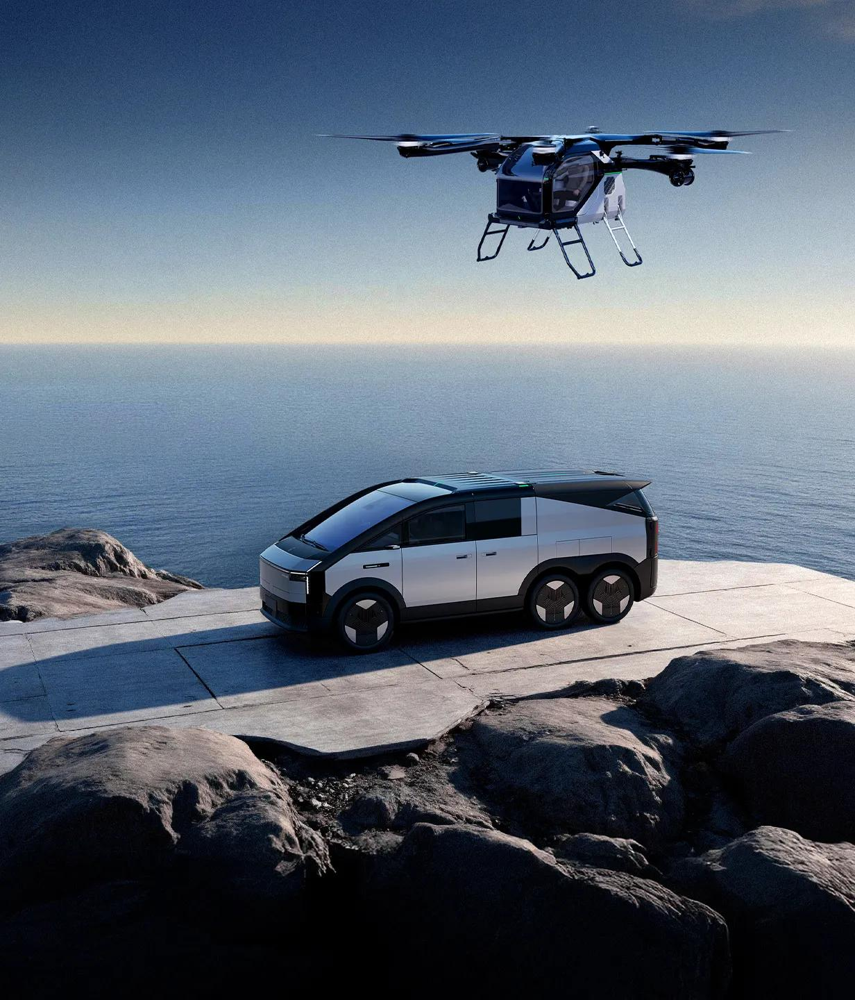
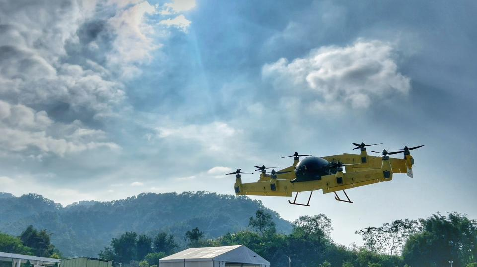
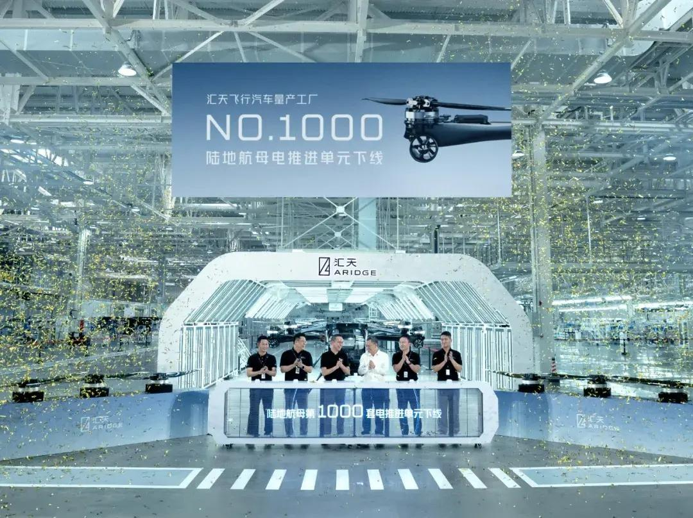

旅航者 X2
Fifth-gen tandem multirotor demonstrator
- 构型双人纯电多旋翼，封闭式座舱，全碳笼式机身
- 座位2 人，空机含电池约 560 kg，最大载重约 200 kg
- 性能最大时速约 130 km/h，续航约 35 分钟，设计高度 1000 m 以下
- 定位技术验证与展示机型，不面向销售
阶段：已验证 / 巡游展示
一家由汽车生态延伸而来的低空出行公司：用汽车供应链与量产方法论切入 eVTOL，同时面对航空适航、空域规则、能源密度与商业交付的多重约束。本文只对公开可核验材料负责，区分“已演示 / 工程待验证 / 运输化未证明”三个层级。

小鹏汇天的核心命题，不是“造出一架会飞的原型机”，而是能否把航空级安全要求，装进一条汽车级效率的量产线，并在低空规则尚未完全定型时找到可付费的场景。
本文采用“公开资料综述式案例评估”，不宣称完成了多评审员的正式系统综述。研究链条为：问题界定 → 公开检索 → 来源分级 → 证据矩阵 → 工程与商业判断 → 适用边界说明。研究对象为小鹏汇天公司整体及其公开产品族，时间范围为 2013 年公司前身创立至 2026 年 11 月 17 日。
检索覆盖：公司官网与官方新闻、小鹏集团公开披露、第三方行业媒体（36 氪、新华网、企查查等）、行业报告（Asian Sky Group）以及公开适航与政策报道。需要强调：公开演示视频、发布会参数与意向订单，只能支持“企业提出了某项指标/展示了某种行为”，不能自动证明持续飞行能力、安全完整性等级、量产一致性或商业盈利。
用于确认产品构型、企业自述指标、产能规划与融资/订单口径；官方数据属于“企业主张”，需与第三方材料交叉核验。
用于交叉核验融资轮次、交付时间调整、订单规模与行业位置；媒体转述若与官方口径冲突，以时间更近、可回溯原文者为准，并在正文标注分歧。
用于解释适航层级（特许飞行证 / TC / PC / AC / OC）、构型分类与安全冗余要求；标准条文用于机理说明，不构成对某机型已符合全部条款的判断。
涉及“可行性分层”“市场定位”“风险排序”等为分析性结论，均标注前提；不把订单意向等同于确认收入，不把演示架次等同于商业交付。
| 来源类别 | 检索方向 | 主要用途 | 边界说明 |
|---|---|---|---|
| 公司官方 | 官网产品页、官方新闻稿、科技日发布 | 构型、参数口径、产能、场景布局 | 企业主张，含未量产目标值 |
| 集团披露 | 小鹏集团新闻、财报与战略表述 | 生态协同、物理 AI 技术底座、研发投入背景 | 汇天未独立披露完整财务报表 |
| 第三方媒体 | 36 氪、新华网、腾讯/凤凰转载、企查查 | 融资、订单、交付节奏、行业对比与风险 | 部分为知情人士口径，存在更新滞后 |
| 行业报告 / 监管 | Asian Sky Group、CAAC 适航报道、低空政策 | 产品阶段分类、适航层级、政策环境 | 政策与认证进度随时间变化 |
汇天的演进可分为三段：早期多旋翼单人/双人验证机积累飞控与试飞经验；2020 年并入小鹏汽车生态后获得供应链与资金支持；2022 年起转向分体式陆空构型，并同步储备全倾转高速长航程技术。时间节点反映的是产品叙事与工程阶段变化，不等同于已验证的量产成熟度。
汇天产品谱系可按“成熟度”分为演示验证型、近期量产型与远期储备型。三者构型、航程与监管目标不同，不能把 X2 的演示飞行记录直接外推到 X3-F 的商业交付能力，也不能把 A868 的设计目标值当作已验证性能。



从公开材料看，汇天的技术叙事围绕四条主线展开：分布式电推进、飞行控制与智能辅助驾驶、全域安全冗余、以及汽车化的制造与供应链体系。下面按子系统拆解，并标注哪些属于已公开验证、哪些仍依赖后续取证与量产数据。
| 技术层级 | 已公开可核验 | 待工程验证 | 主要约束 |
|---|---|---|---|
| 演示飞行 | X2 多地试飞、X3-F 示范飞行与海外特许飞行 | 复杂气象、夜间、满载长航时运行 | 演示空域与条件受控，不等于开放空域运行 |
| 工程化 | 试产下线、电推进单元批量产出、冗余构型设计 | 量产一致性、维保体系、失效模式闭环 | 航空级验证周期长，测试矩阵未完整公开 |
| 运输化 | 意向订单与示范场景签约 | 规模化载人商业运营、单位经济性、保险与责任体系 | 适航、空域、基础设施与公众接受度尚未成熟 |
对载人低空飞行器，安全不是单一指标，而是覆盖动力、能源、飞控、操控、通信、供电与结构的系统工程。理解汇天所处阶段，先要区分几类容易被混用的资质：特许飞行证允许在限定条件下开展试验/演示飞行；型号合格证（TC）确认设计符合适航标准；生产许可证（PC）确认批量生产体系受控；标准适航证（AC）与运营合格证（OC）分别对应单机适航与商业载人运营资格。
需要警惕的判断误区：演示飞行中“平稳起飞、悬停、降落”只能证明在受控条件下完成了动作；不能据此推断整机在单发失效、极端天气、电池热失控、导航丢失等失效场景下的安全水平。这些结论需要通过审定试飞、失效模式与影响分析（FMEA）、冗余切换测试和持续安全记录来支撑。
结合产品定位与公开签约信息，汇天近期可落地的场景集中在“低空文旅 + 营地体验 + 示范接驳”，而不是城市内大规模个人通勤。后者受限于空域、起降点、噪声、保险与公众接受度，短期难以成为主力市场。
在产业园区、临空经济区、海外监管示范区内完成短距离点对点接驳与示范运行，积累航线、调度与地面保障经验。
多旋翼/混动构型理论上可用于野外救援、医疗运输、巡逻巡检；但载人救援对可靠性与环境适应性要求更高，需后续专项验证。
六座全倾转混电机型面向周边城市间短途商务出行，目标半小时级飞行圈；依赖高速长航程验证、空域开放与基础设施配套。
| 场景 | 适配产品 | 成熟度判断 | 前置条件 |
|---|---|---|---|
| 营地体验/观光 | X3-F、X2 | 近期可落地 | 营地起降点、培训、保险与受控空域 |
| 示范接驳 | X3-F | 示范阶段 | 航线审批、调度系统、地面保障 |
| 城市通勤 | X3-F / A868 | 远期假设 | 大规模空域开放、vertiport 网络、噪声与安全标准 |
| 城际商务 | A868 | 研发储备 | 倾转构型取证、航程验证、商业航线 |
从订单、价格与交付节奏看，汇天面对的是一个“早期高净值 + 示范采购 + 场景合作”的市场，而不是面向普通消费者的规模化出行工具。判断市场可行性时，需要把意向订单、大定订单与确认收入分开，把产能规划与实际交付分开。
综合判断：汇天在中期更可能成为“面向场景运营商与高净值个人的低空装备供应商 + 运营服务参与者”，收入兑现节奏取决于取证进度、示范航线放量和维保成本下降；把“万亿低空市场”直接折算成单款产品销量，在现阶段属于不严谨的推断。
eVTOL/飞行汽车赛道在构型上分为多旋翼、复合翼与倾转旋翼三类，在商业化阶段上分为已取证交付、试飞取证中、研发储备三档。下表选取国内外代表性玩家做横向对照，参数以公开口径为准，不同来源数字存在分歧时以区间/标注方式呈现。
| 公司 / 机型 | 构型与定位 | 阶段与适航 | 特点与短板 |
|---|---|---|---|
| 小鹏汇天 陆地航母 X3-F / A868 |
分体式陆空 + 双座多旋翼；远期六座全倾转混电 | TC/PC 推进中 试产下线，目标 2027 年中交付 | 汽车供应链与制造复用强；差异化在陆行/飞行分体；短板是尚未取得载人商业适航资质，航程偏短途。 |
| 亿航智能 EH216-S |
双座多旋翼，无人驾驶载人，低空观光/接驳 | TC/PC/AC/OC 齐全 已商业试运营 | 全球较早集齐全套适航资质并实现载人交付；多旋翼构型航程与速度有限，城市通勤能力弱。[12] |
| 沃飞长空 AE200 |
6 座级倾转动力纯电 eVTOL，空中出租车定位 | 审定推进中 计划 2027 年左右取证 | 吉利系背景，复合/倾转路线面向城际通勤；仍处高研发未盈利阶段，估值依赖取证节奏。[13] |
| 峰飞航空 V2000CG / 天际龙 |
货运优先，2 吨级/5 吨级复合翼与混动 | 货运先行 转换飞行验证中 | 先用货运场景验证平台与航程；载人客运与售后体系相对靠后。[12] |
| Joby / Archer（美国） | 倾转旋翼/复合翼载人 eVTOL，城市空中出租车 | FAA 认证阶段 持续试飞与订单交付博弈 | 资本与监管资源充足，研发投入大；商业化仍受认证节奏、盈利与运营成本约束。 |
路线对比的核心结论：多旋翼（X2、EH216-S）技术成熟度高但航程速度受限；复合翼/倾转旋翼（AE200、A868、Joby）性能上限更高，但飞控转换、结构与取证难度更大。汇天选择“分体式个人飞行 + 远期倾转多人出行”的双线布局，本质上是在近期可交付性与远期性能上限之间做平衡。
TC/PC 尚未正式颁发，取证周期存在不确定性；适航进度直接决定能否规模化生产与交付，是当前最关键的前置变量。
从试产样机到批量交付，需要稳定的供应链、工艺一致性与质量追溯体系；早期小批量交付可能暴露装配、维保与备件问题。
纯电多旋翼航程短、载重受限；混电路线增加复杂度。电池能量密度与低温性能未取得突破前，长航时重载场景难以成立。
低空审批流程、起降网络、噪声管控、低空交通管理系统尚未成熟；示范区经验能否复制到开放空域存在不确定性。
行业普遍依赖融资，汇天虽融资居前，但未独立披露盈利数据；若订单转化、交付节奏或融资环境变化，研发与产能投入压力会上升。
一旦出现安全事故，可能延缓整体监管开放与公众信任；载人低空出行的责任划分、保险产品与应急处置机制仍待建立。